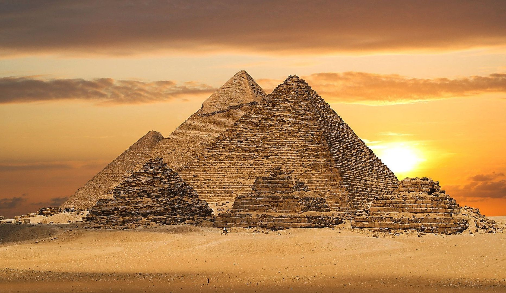
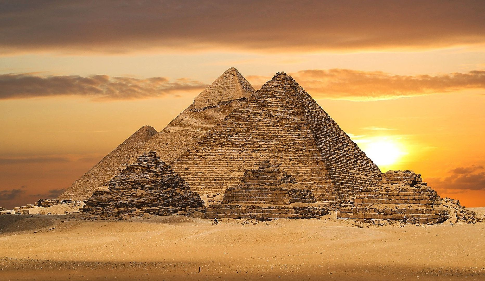

| Giza pyramid complex  |
The Giza pyramid complex is an archaeological site on the Giza Plateau, on the outskirts of Cairo, Egypt. It includes the three Great Pyramids (Khufu/Cheops, Khafre/Chephren and Menkaure/Mykerinos)), the Great Sphinx, several cemeteries, a workers' village and an industrial complex. It is located in the Western Desert, approximately 9 km (5 mi) west of the Nile river at the old town of Giza, and about 13 km (8 mi) southwest of Cairo city centre. The pyramids, which have historically been common as emblems of ancient Egypt in the Western imagination, were popularised in Hellenistic times, when the Great Pyramid was listed by Antipater of Sidon as one of the Seven Wonders of the World. It is by far the oldest of the ancient Wonders and the only one still in existence. |
| Egyptian Museum |
The Egyptian Museum of Antiquities contains many important pieces of ancient Egyptian history. It houses the world’s largest collection of Pharaonic antiquities. The Egyptian government established the museum built in 1835 near the Ezbekeyah Garden and later moved to the Cairo Citadel. In 1855, Archduke Maximilian of Austria was given all of the artifacts by the Egyptian government; these are now in the Kunsthistorisches Museum, Vienna. A new museum was established at Boulaq in 1858 in a former warehouse, following the foundation of the new Antiquities Department under the direction of Auguste Mariette. The building lay on the bank of the Nile River, and in 1878 it suffered significant damage in a flood of the Nile River. In 1891, the collections were moved to a former royal palace, in the Giza district of Cairo.[1] They remained there until 1902 when they were moved, for the last time, to the current museum in Tahrir Square. |
| Khan el-Khalili |
The site of Khan el-Khalili was originally the site of the mausoleum known as the turbat az-za'faraan (Saffron Tomb), which was the burial site of the Fatimid caliphs.[2][3]:57 The mausoleum was part of the Fatimid Great Eastern Palace complex, begun in 970 AD by Gawhar al-Siqilli, the general who conquered Egypt for the Fatimid dynasty and founded Cairo that same year. By the time of Sultan Barquq, the first Circassian (or Burji) Mamluk Sultan, in the late 14th century, Egypt had been significantly affected by the ravages of the Black Death but continued to be the center of great economic activity, with many commercial and religious buildings still being constructed at this time.[3]:147 During Barquq's first reign (1382-1389) his Master of the Stables (or amir akhur), Jaharkas al-Khalili, demolished the Fatimid cemetery to erect a large caravanserai (خان khan in Arabic; a building that could house merchants and their goods) at the heart of the city.[4]:179 He reportedly disposed of the bones of the Fatimid royal family by throwing them into the rubbish hills east of the city. |
| Cairo Tower |
Built from 1954 to 1961, the tower was designed by the Egyptian architect Naoum Shebib.Its partially open lattice-work design is intended to evoke a pharaonic lotus plant, an iconic symbol of Ancient Egypt. The tower is crowned by a circular observation deck and a rotating restaurant with a view over greater Cairo. One rotation takes approximately 70 minutes. In the 1960s, Egyptian President Gamal Abdel Nasser announced that the funds for the construction of the Tower originated with the Government of the United States, which had provided $US6 million to him as a personal gift with the intent of currying his favour. Affronted by the attempt to bribe him, Nasser decided to publicly rebuke the U.S. government by transferring all of the funds to the Egyptian government for use in building the tower, which was 'visible from the US Embassy just across the Nile, as a taunting symbol of Arab resistance and pride'. Between November 2004 and 17 May 2009 it underwent a EGP 35 million restoration project, completed in time for its fiftieth anniversary on April 2011 |
| Bab Zuweila |
Bab Zuweila is one of three remaining gates in the walls of the Old City of Cairo, the capital of Egypt. It was also known as Bawabbat al-Mitwali during the Ottoman period, and is sometimes spelled Bab Zuwayla. It is considered one of the major landmarks of the city and is the last remaining southern gate from the walls of Fatimid Cairo in the 11th and 12th century.[1] Its name comes from Bab, meaning "Door", and Zuwayla, the name of a tribe of Berber warriors from the Western Desert, members of which were charged with guarding the gate.
|